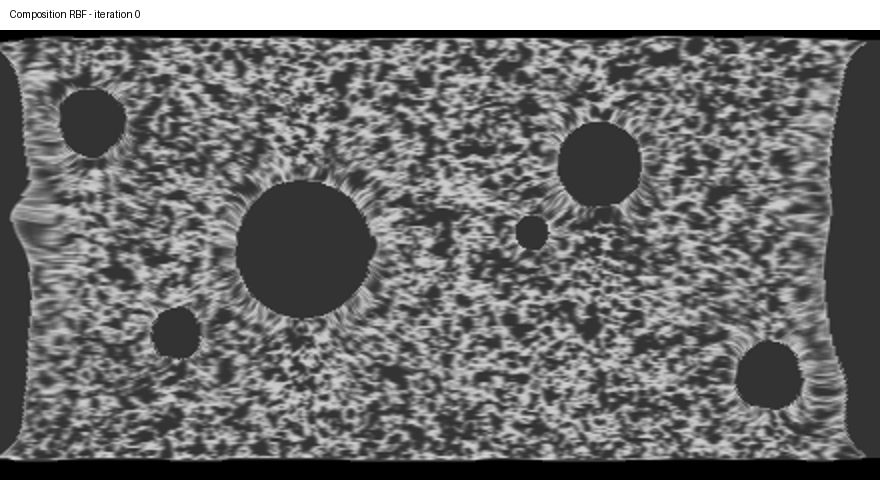
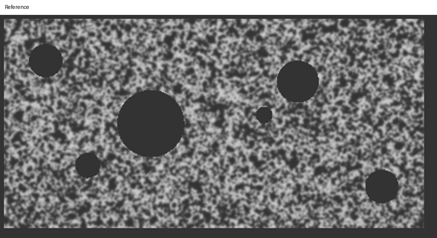
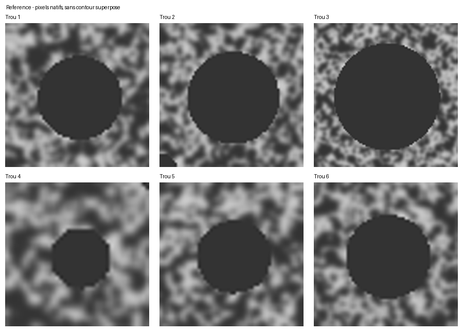
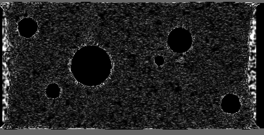
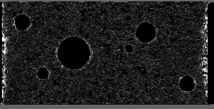
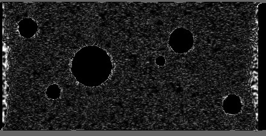
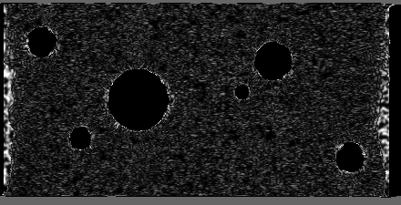
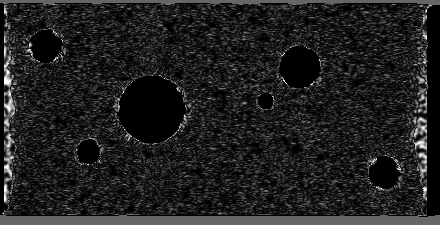

Résultat sur la plaque trouée, image 191 : la composition améliore la corrélation de la couronne de 0.622 à 0.746, mais les résolutions acceptées sur les images originales passent seulement de 3125 à 3129 sur 5126 fenêtres. Le gain de remapping est réel ; ce test ne démontre pas un déblocage massif de l’initialisation. Les derniers passages saturent et détériorent certains contours. Les bords extérieurs restent partiellement perdus.
RBF : fonctions de base radiale. À chaque itération : corrélation affine résiduelle sur GPU (processeur graphique), contrôle sur la cible originale, moments des trous remappés, ajustement RBF, puis composition Φnouveau(x) = Φancien(x + δu(x)). Les jacobiennes se multiplient dans ce même ordre. Les images affichées sont toutes échantillonnées une seule fois dans la cible originale.
Supports de 12 pixels, pas de 4 pixels ; seuil de corrélation 0,65 inchangé. Les pas 1, 1/2, 1/4 et 1/8 sont comparés sur un ensemble fixe de pixels matériels ; on refuse une augmentation des plis ou des sorties d’image. Aucun déplacement analytique n’est utilisé. Prototype de développement : calcul local GPU, ajustement et composition CPU.
Ces corrélations ne constituent pas une mesure d’erreur de déplacement. Le recouvrement des trous participe à l’ajustement. Les anciennes graines restent intactes. La couronne est définie par 1 ≤ r/r₀ < 1,25.
| Itération | Corrélation matière | Couronne | Recouvrement trous | Déterminants ≤0 | Matière hors image |
|---|---|---|---|---|---|
| 0 | 0.8304 | 0.6218 | 95.03% | 0 | 11 |
| 1 | 0.8651 | 0.7008 | 95.45% | 0 | 0 |
| 2 | 0.8695 | 0.7240 | 94.76% | 0 | 0 |
| 3 | 0.8707 | 0.7347 | 94.19% | 0 | 0 |
| 4 | 0.8706 | 0.7457 | 93.51% | 0 | 0 |
Tous les essais et valeurs brutes · image1_ref · image1_def_cor


Les six paramètres affines locaux sont extraits du champ composé et transmis au solveur de corrélation d’images numériques par Gauss–Newton à composition inverse (IC-GN). Même grille de 12 pixels et pas de 4 pixels ; au plus quatre blocs de 30 itérations, tolérance 0,001 et corrélation minimale 0,65. Les fenêtres sont également contrôlées sur la matière et les pixels originaux. Ce comptage est distinct de celui du solveur sur l’image remappée. Une acceptation photométrique ne démontre pas une erreur de déplacement faible en l’absence de vérité.
La référence archivée contient 3 163 fenêtres acceptées. Leur état est conservé dans l’archive fusionnée ; les anciens points non retrouvés par ce nouvel essai n’en sont pas supprimés.
| Champ initial, itération | Acceptées sur images originales | Nouvelles / archive | Anciennes non retrouvées | Union conservant l’archive | Données |
|---|---|---|---|---|---|
| 0 | 3125/5126 | 18 | 56 | 3181 | Détail |
| 4 | 3129/5126 | 28 | 62 | 3191 | Détail |
Une projection située dans l’image peut néanmoins tomber dans le fond : ces deux défauts sont comptés séparément. Bande matérielle de huit pixels près du bord extérieur ; erreur quadratique moyenne d’intensité sur toute la matière, en niveaux de gris 0–255.
| Itération | Corrélation bande extérieure | Pixels de cette bande projetés dans le fond | Erreur d’intensité |
|---|---|---|---|
| 0 | 0.544 | 2974/9888 | 25.29 |
| 1 | 0.665 | 2402/9888 | 22.55 |
| 2 | 0.684 | 2337/9888 | 22.21 |
| 3 | 0.689 | 2318/9888 | 22.10 |
| 4 | 0.685 | 2348/9888 | 22.11 |
Le trou seul ne suffit pas : chaque animation alterne les textures natives de référence et de la cible remappée. La corrélation est calculée dans la couronne matérielle 1 ≤ r/r₀ < 1,25. Aucune vérité de déplacement n’est disponible.

| Trou | Corrélation couronne | Recouvrement |
|---|---|---|
| 1 | 0.571 | 93.5% |
| 2 | 0.683 | 96.3% |
| 3 | 0.616 | 96.1% |
| 4 | 0.601 | 92.4% |
| 5 | 0.655 | 92.6% |
| 6 | 0.588 | 92.4% |
Différence absolue ×2, même échelle à chaque itération :

| Trou | Corrélation couronne | Recouvrement |
|---|---|---|
| 1 | 0.649 | 92.4% |
| 2 | 0.744 | 96.7% |
| 3 | 0.710 | 96.9% |
| 4 | 0.691 | 96.9% |
| 5 | 0.700 | 91.7% |
| 6 | 0.651 | 92.9% |
Différence absolue ×2, même échelle à chaque itération :

| Trou | Corrélation couronne | Recouvrement |
|---|---|---|
| 1 | 0.663 | 92.0% |
| 2 | 0.774 | 96.2% |
| 3 | 0.734 | 95.8% |
| 4 | 0.721 | 94.7% |
| 5 | 0.713 | 93.0% |
| 6 | 0.677 | 92.3% |
Différence absolue ×2, même échelle à chaque itération :

| Trou | Corrélation couronne | Recouvrement |
|---|---|---|
| 1 | 0.679 | 90.5% |
| 2 | 0.797 | 96.3% |
| 3 | 0.748 | 95.5% |
| 4 | 0.621 | 93.9% |
| 5 | 0.714 | 91.1% |
| 6 | 0.681 | 91.2% |
Différence absolue ×2, même échelle à chaque itération :

| Trou | Corrélation couronne | Recouvrement |
|---|---|---|
| 1 | 0.693 | 89.3% |
| 2 | 0.796 | 95.4% |
| 3 | 0.759 | 95.1% |
| 4 | 0.680 | 93.3% |
| 5 | 0.726 | 92.9% |
| 6 | 0.700 | 89.0% |
Différence absolue ×2, même échelle à chaque itération :
